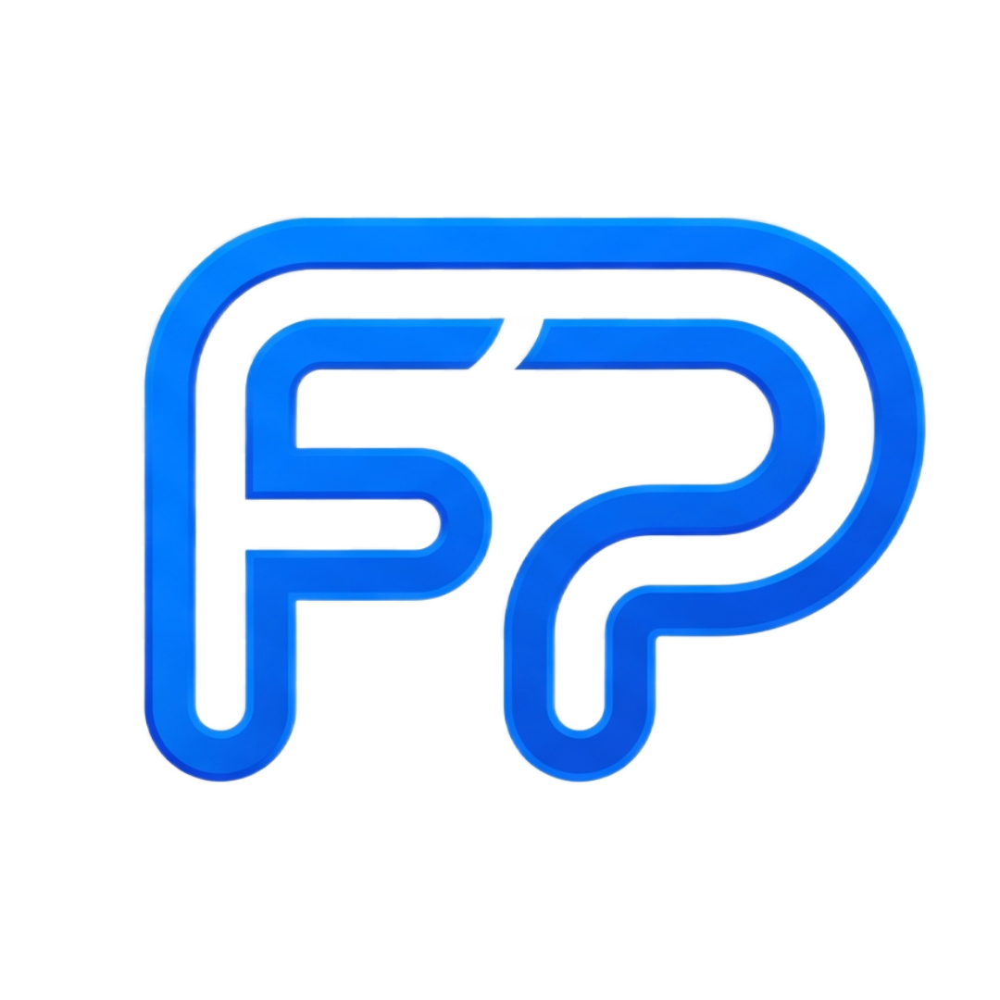

Fernando Parmezani01/10
Raio-X do Currículo
21 anos de carreira.
Nota 84.
Passei meu próprio currículo no Raio-X. Ele achou 4 pontos que me escondiam dos recrutadores.
84


Fernando ParmezaniPassei meu próprio currículo no Raio-X. Ele achou 4 pontos que me escondiam dos recrutadores.
Antes do recrutador, um programa lê o seu PDF procurando as palavras da vaga.
Se ele não encontra, a vitrine fica com a luz apagada. Não importa o quanto o que está lá dentro seja bom.
Esse programa tem nome: ATS, o filtro de candidatos que quase toda empresa usa.
Engenheiro de Software Sênior .NET | Backend | Cloud
Engenheiro de Software Sênior .NET | Backend C# | AWS e Azure
É como uma loja escrever “calçado” na vitrine enquanto o cliente procura “tênis de corrida”.
Automatizo build e release, reduzindo os ciclos de deploy e eliminando etapas manuais.
Automatizo build e release, reduzindo o ciclo de deploy de [antes] para [depois] e eliminando [nº] etapas manuais.
O amarelo a ferramenta não inventa. Ela marca o lugar onde só você sabe a resposta.
É como entrar num táxi e não dizer o endereço. O motorista até anda, mas para onde?
Atuar como Engenheiro de Software Sênior / Especialista .NET Backend em times remotos, construindo APIs e soluções em AWS ou Azure.
Uma frase no topo ajuda o filtro e o recrutador a te colocar na pilha certa.
Não é para inventar. É para lembrar do que você já fez e esqueceu de escrever. Só entra o que é verdade.
É o tempo de uma primeira olhada. O Raio-X te conta o que dá para entender de você nesse tempo. O meu ficou assim:
Engenheiro de Software Sênior .NET backend, com 21 anos de carreira, AWS/Azure e especialidade em modernização de legado e tuning de SQL Server.
Se essa frase não for a que você quer passar, é ali que se mexe.
Saber o que manter vale tanto quanto saber o que trocar.
Seu currículo não fica guardado no servidor. É lido, analisado e descartado.
Quem se cadastra ganha 10 créditos. Dá para 3 leituras completas.